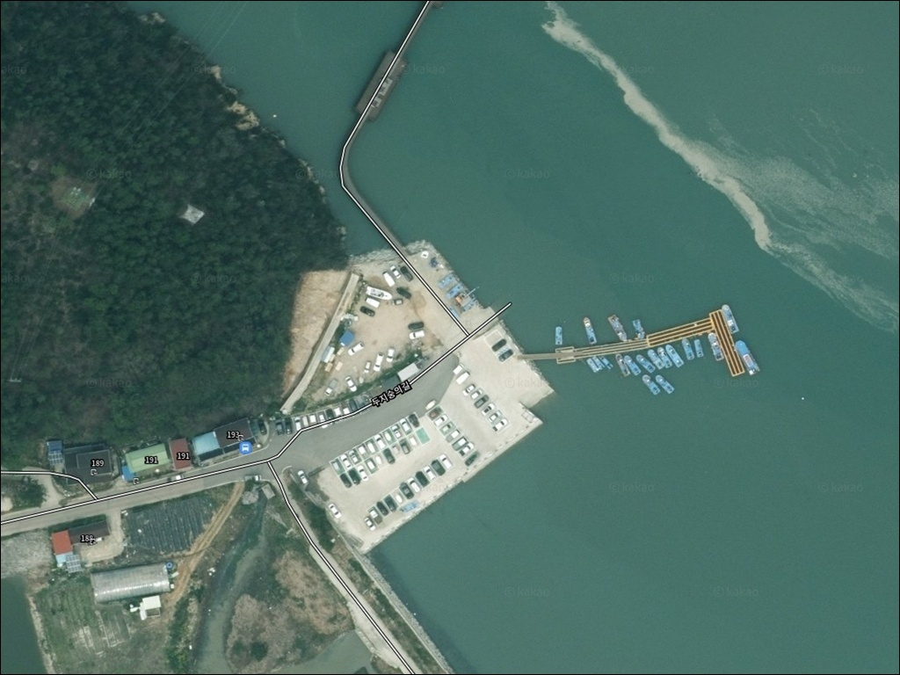
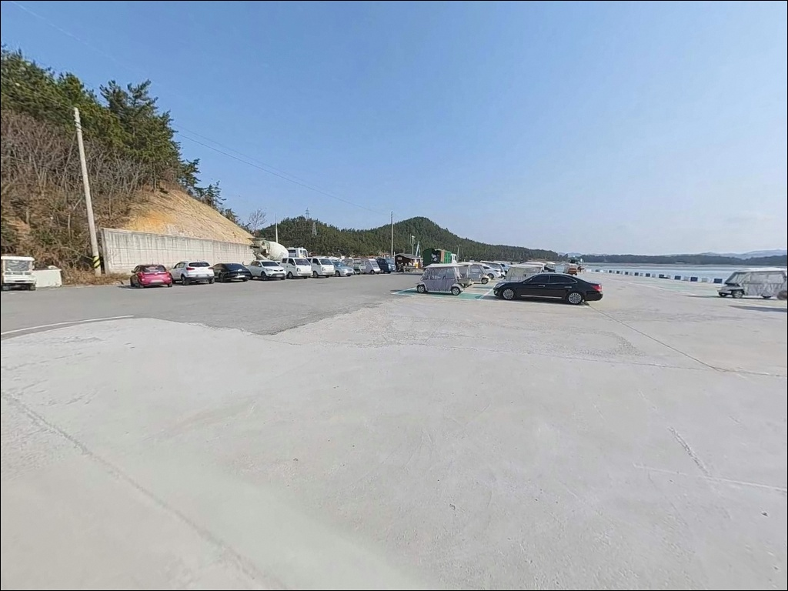
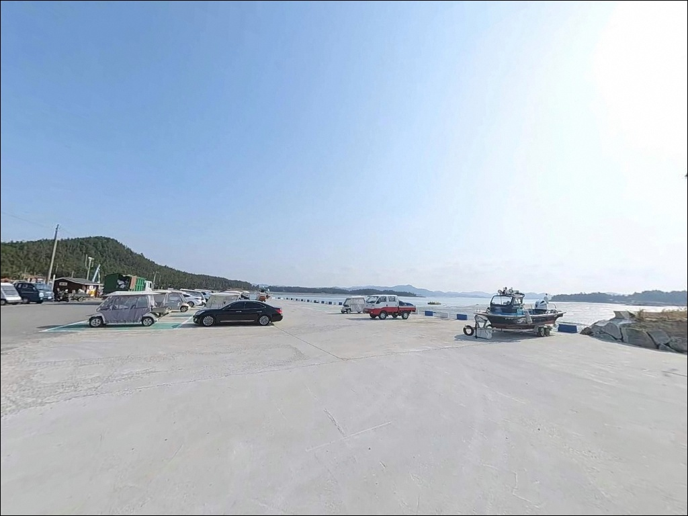
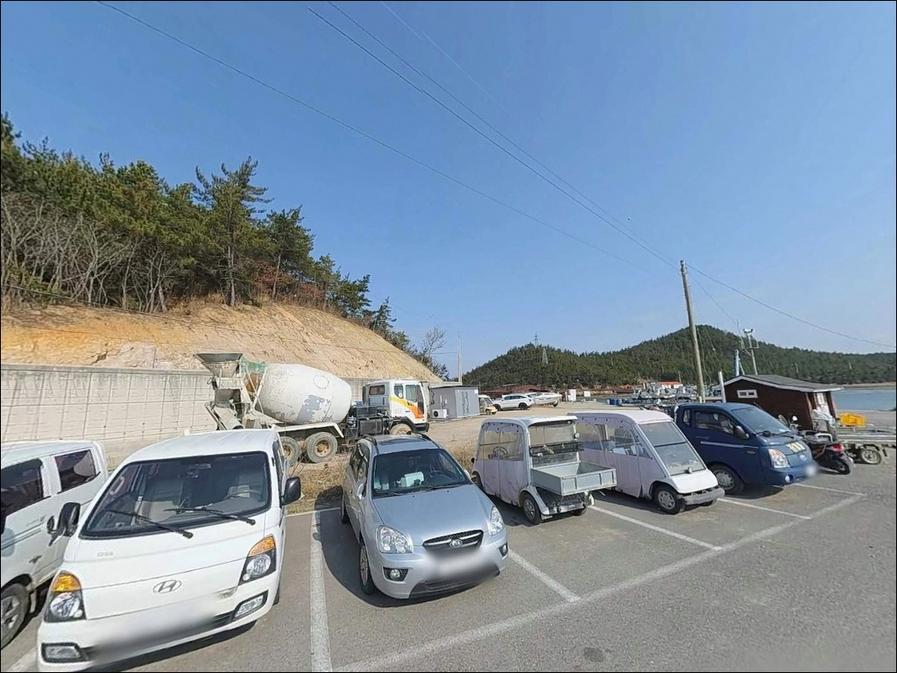
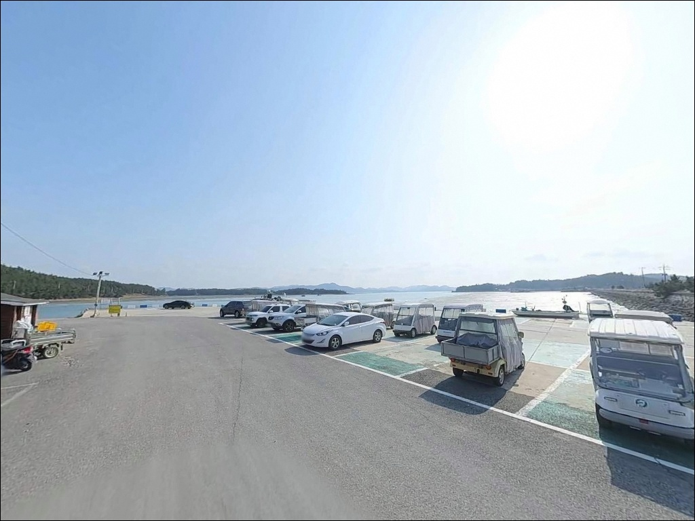
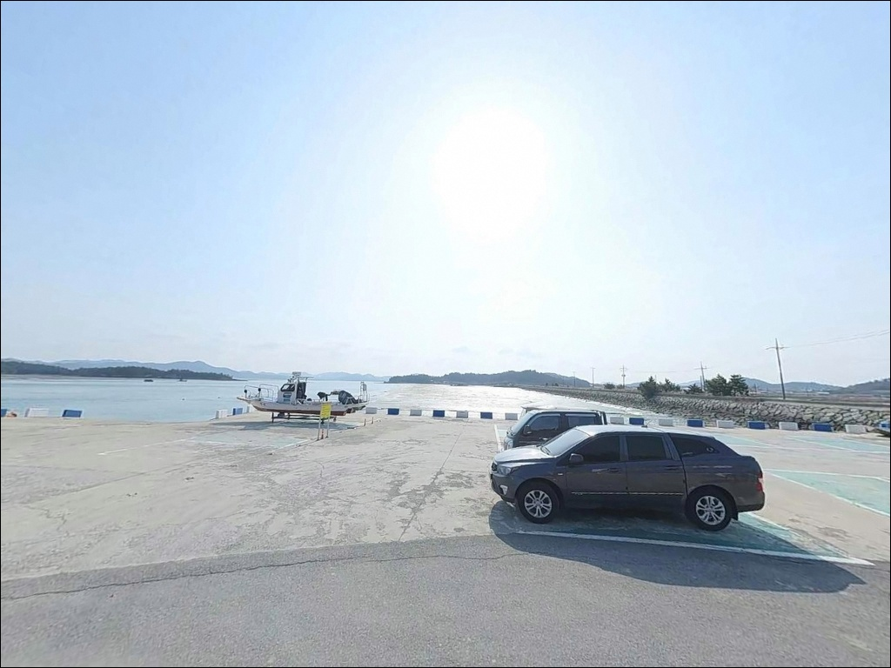
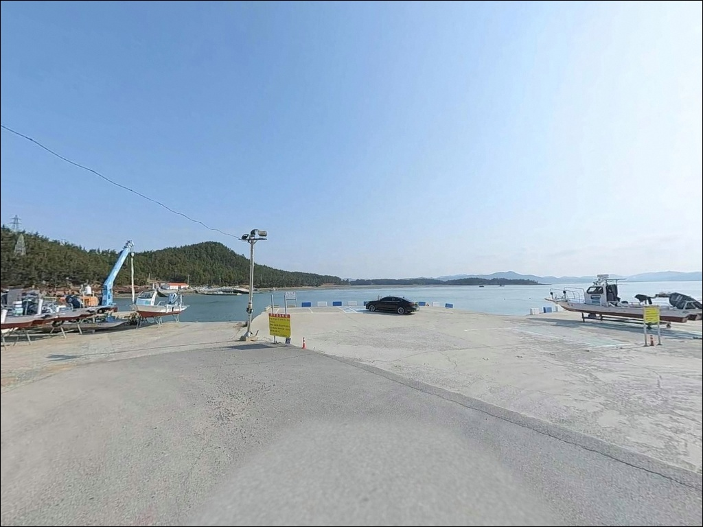
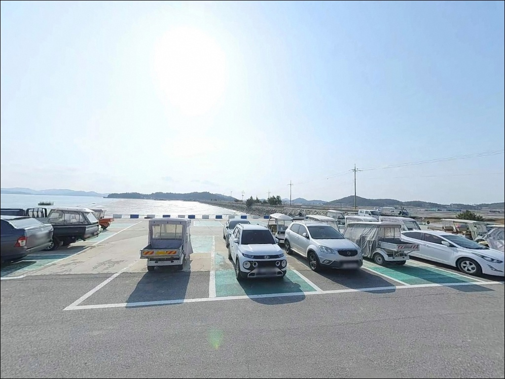
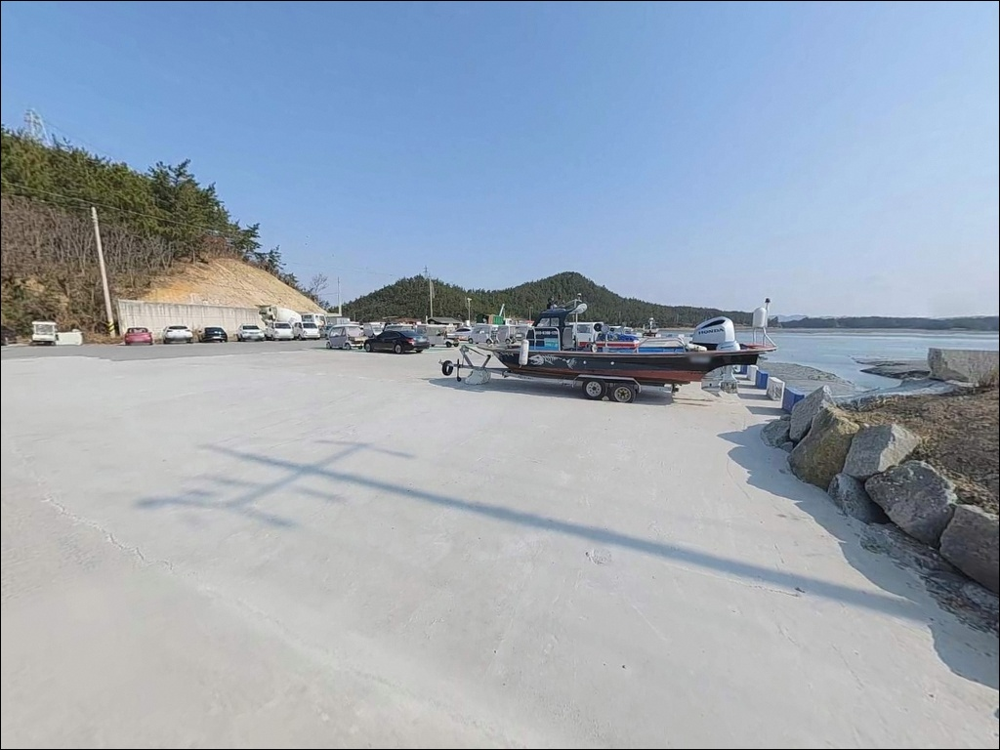

숭의선착장, 전남 신안군 잔잔한 물결과 어울리는 차박, 낚시 한적한 포인트


포인트 안내
숭의선착장
전남 신안군 압해읍 분매리 산 1-4
물때 확인 없이 숭의선착장에 도착하면
드러난 갯벌 앞에서 채비를 내릴 자리를 찾지 못합니다.
가란도와 압해도 사이 좁은 수로는
간조에 갯벌이 넓게 드러나는 구조여서,
들물 타이밍을 맞추지 않으면
원투 채비가 바닥을 끌 뿐입니다.
이 글은 숭의선착장의 지형 조건,
진입 환경, 낚시 방식 적합성,
차박 여건에 집중합니다.
조황 단정이나 특정 어종 보장은
이 글의 범위에 포함되지 않습니다.

1. 진입 동선과 포인트 접근성
압해도는 목포에서 압해대교로 연결된 섬으로
차량 진입 자체에 큰 어려움은 없습니다.
압해도 내륙 도로를 따라 분매리 방면으로 이동하면
숭의선착장에 닿는 구조입니다.
다만 마을 안길은 포장 구간이지만
선착장 근처로 갈수록 폭이 좁아지는 구간이
포함되어 있습니다.
가란대교 입구 주변에 소규모 평탄 공간이 있어
이 구간이 주차 후보지로 활용됩니다.
공간 자체가 넓지 않아
대형 SUV나 루프탑 장비를 얹은 차량은
회차 가능 여부를 출발 전 위성지도로 먼저 확인하는 것이
현장 당황을 막는 확실한 방법입니다.
선착장 주변은 어업 작업 차량이 오가는 공간입니다.
어선 이동 동선을 막지 않는 위치에 자리를 잡는 것이 기본이며,
좁은 진입로에 장시간 주차하면
주변 어업 활동에 불편이 생길 수 있는 구조입니다.

2. 차박 환경과 야간 체류 여건
분매리는 민가 밀집도가 낮은 소규모 어촌 권역입니다.
야간에 외부 차량 통행이 적고 주변이 조용한 편이라
낚시 후 하룻밤 머무는 차박 여행자에게
프라이버시 면에서는 나쁘지 않은 환경입니다.
선착장 주변 주차 가능 공간 자체가 협소해
차박을 메인으로 기획하기보다는
낚시 출조에 부수적으로 하룻밤 머무는 방식이
현실적인 활용 형태입니다.
가로등 밀도가 높지 않을 가능성이 있어
개인 조명 장비는 반드시 챙겨야 합니다.
가란도와 압해도 사이 수로 방향으로
기상에 따라 바람 영향이 있을 수 있습니다.
출조 전날 기상청 예보에서
바람 방향과 세기를 한 번 더 확인하는 것이
차박 체류 중 불편을 줄이는 기본 준비입니다.


3. 주변 편의시설 및 인프라 현황
숭의선착장 주변 반경 내
편의점·식당·주유소의 정확한 위치는
이 글에서 단정하기 어렵습니다.
압해읍 중심 상업 지역까지
일정 거리가 있는 구조로,
완전 자급 체제로 진입하는 것이
현실적인 준비 방식입니다.
식수, 얼음, 채비 소품, 연료는
출발 전 압해읍이나 목포 시내에서
미리 준비해 두는 것이 좋습니다.
응급 상황 발생 시
119 신안군 압해읍 지역대가
압해읍 학교리에 위치합니다.

4. 진입 전 반드시 확인해야 할 물때와 준비 조건
숭의선착장 방문 전에 가장 먼저 확인할 것은
물때입니다.
서해 갯벌형 포인트 특성상
간조에 갯벌이 드러나는 구간이 넓어
타이밍을 놓치면 낚시 자리가
수면이 아닌 갯벌 위가 됩니다.
바다타임에서 분매리 기준 물때를 확인하고
초들물 시각에 맞춰 현장 도착 시각을 설정하는 것이
기본 전략입니다.
갯벌·돌 혼합 바닥 구조여서 채비 손실이 잦은 편입니다.
여분 채비는 넉넉하게 준비하는 것이 좋고,
야간 출조 시에는 헤드랜턴과 구명조끼를
반드시 갖춰야 합니다.
소형 어촌 선착장 구조상 어선 조업이 이루어지는 공간입니다.
어선 동선과 어구에 접촉하지 않도록 자리를 잡고,
낚시 후 발생한 쓰레기는 전량 수거하는 것이
현지 어업인과의 관계를 유지하는 기본 매너입니다.

5. 가란대교 수로 지형과 낚시 여건 분석
숭의선착장의 핵심은
가란도와 압해도 사이에 형성된 좁은 수로입니다.
두 섬 사이 직선 거리 200~300m 구간에서
수로폭이 좁아지며
조류가 집중적으로 흐르는 구간이 만들어집니다.
초들물~중날물 타이밍이
이 구조에서 낚시 여건이 살아나는 시간대입니다.
저질은 펄 위주로 구성되어 있으며
간조 시에는 갯벌이 넓게 드러나는 지형입니다.
방파제 구조가 아닌 소형 선착장 형태로
테트라포드나 갯바위 접근은 제한적인 편입니다.
선착장 안쪽은 상대적으로 잔잔한 환경이라
파도 영향은 적은 편이지만,
수로 방향에서 부는 바람은
기상 확인 없이 넘기기 어려운 변수입니다.
가란도와 압해도 사이 수로는 조류 흐름이 집중되는 구간으로,
초들물 타이밍에 채비를 내보내는 방식이
이 포인트 낚시의 기본 전제입니다.
출조 전 최신 조황은
"숭의선착장 낚시", "가란대교 낚시",
"압해도 조황" 키워드로 검색해 보시기 바랍니다.


6. 이 포인트에 어울리는 낚시 스타일
이 포인트에서 가장 잘 맞는 낚시 스타일은
원투낚시입니다.
펄 위주의 바닥 지형과 수로 조류 흐름은
붕장어와 노래미, 농어를 노리는
원투 채비에 적합한 조건입니다.
들물 방향으로 채비를 날려
수로 중앙에 닿게 하는 방식이
기본 공략 전략입니다.
릴찌낚시도 이 포인트 구조에 맞는 선택입니다.
만조 전후 수심이 확보되는 시간대에
감성돔과 숭어를 노리는 방식으로 운용할 수 있으며,
조류가 살아 있는 들물~중썰물 구간이
기대해볼 만한 타이밍입니다.
루어 낚시도 시도해볼 만한 스타일입니다.
선착장 주변 석축이나 구조물 경계에서
소프트베이트 채비로 볼락, 우럭, 농어를
탐색하는 방식입니다.
만조 전후 수심이 들어오는 시간대가
루어 반응이 살아나는 조건에 가장 가깝습니다.

7. 대안 포인트와 플랜 B 동선
숭의선착장 여건이 여의치 않을 때
첫 번째 이동 후보는
복룡리 나룻가선착장입니다.
압해도 북쪽에 위치한 ㄷ자형 선착장 구조로
낚시 포인트로 등재된 검증된 대안입니다.
김대중대교가 보이는 자리에서
방파제를 끼고 다양한 방향으로 채비를 운용할 수 있어
이동 거리 대비 효율이 있는 선택입니다.
압해도 선착장(신장리 기준)도
낚시 포인트 데이터베이스에 등재된 곳입니다.
처음 압해도를 찾는다면
이곳을 기점으로 삼고
숭의선착장을 병행 탐색하는 동선이
보다 안정적인 출조 방식입니다.
압해도 서쪽 끝의 송공항은
압해도 내에서 규모가 있는 항구입니다.
주차 공간이 상대적으로 넓어
차박 베이스캠프로 삼고
숭의선착장이나 인근 포인트를
당일 탐색하는 동선으로 활용하기 좋습니다.
진입로가 협소한 소형 선착장에서는
위성지도 사전 확인이 현장 도착 후
불필요한 판단 착오를 막는 가장 확실한 준비입니다.

조류 타이밍 하나로
숭의선착장이 달라 보입니다
원투낚시를 즐기는 낚시인이라면
숭의선착장의 지형 조건은 잘 맞는 구조입니다.
가란도와 압해도 사이 좁은 수로,
갯벌형 바닥, 초들물 타이밍이 만드는 낚시 여건의 조합은
아직 많이 알려지지 않은
탐험형 포인트만의 특성입니다.
반면 물때를 확인하지 않고 도착하거나
자급 준비 없이 찾아간다면
현장에서 해결할 방법이 없는 상황을
맞닥뜨릴 수 있습니다.
물때 확인, 자급 준비, 진입로 사전 점검,
이 세 가지를 갖추고 간다면
압해도 권역의 조용한 서해 포인트로
기억에 남는 출조가 될 수 있는 곳입니다.
낚시를 마치고 잔잔한 서해 갯벌 앞에 차를 세운 채
하룻밤 머무는 차박을 함께 즐기고 싶다면,
공간 여건을 미리 확인해두고
조용한 어촌 하룻밤을 더하는 출조로 계획하기 좋은 곳입니다.